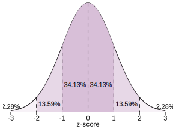
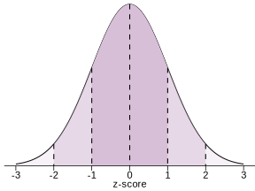
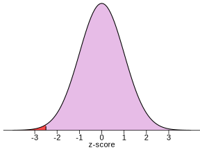

9|HYPOTHESIS TESTING
Overview
Recap
- \(z\)-scores, normal distributions, probability
- \(z = \dfrac{X - \mu}{\sigma}\)
- \(z\)-scores reflect position in population distribution
- Find probabilities using Unit Normal Table / pnorm()


Recap
- Sampling distribution
- Lets us find probabilities of sample means
Central Limit Theorem
- Tells us sampling distribution characteristics without having to take all possible sampes
\(\mu_M = \mu \ \ \ \ \ \ \ \ \ \ \sigma_M = \dfrac{\sigma}{\sqrt{n}}\)

Together…
- Sample statistics, normal distributions, probability, Central Limit Theorem
- We can find \(z\)-score for any sample mean
- Using characteristics of sampling distribution of the mean \((\mu_M\) and \(\sigma_M)\)
- Position of given sample mean in the population of all possible sample means
- Then find probability (using Unit Normal Table / pnorm(), just like for regular \(z\)-scores)
\(z = \dfrac{M-\mu_M}{\sigma_M}\)

Making inferences
- Sampling error
- Statistics obtained for a sample will be different from the corresponding parameters for the population and the statistics will differ from one sample to another
- Problem:
- Is difference between sample & population due to treatment effect or sampling error?
- Addressed by inferential statistics
Right column
Making inferences

Making inferences
Spiderman
- Spiderman
- Are Peter Parker’s RTs “noticeably different?”
- \(z = -2.5\)
- Can state precise probability of observing a \(z\)-score that (or more) extreme


pnorm(-2.5)[1] 0.006209665pnorm(159, mean = 284, sd = 50)[1] 0.006209665Making inferences

Making inferences
- A sample of spidermen (spidermans?)
- How likely is a particular sample mean, given the population characteristics?
- Population \(\mu = 284; \sigma = 50\)
- Single score of \(X = 159\)
- Find position of that score in population distribution and find probability
\(z = \dfrac{X-\mu}{\sigma} = \dfrac{159 - 284}{50} = -2.5\)
pnorm(-2.5)[1] 0.006209665- Sample mean of \(M = 159\); \(n = 5\)
- Find position of that \(M\) in sampling distribution and find probability
\(z = \dfrac{M-\mu_M}{\sigma_M} = \dfrac{159 - 284}{50 / \sqrt{5}} = -5.59\)
pnorm(-5.59)[1] 1.135348e-08Making inferences
- For sample size \(n = 5\), approximately 0.00000001 of sample means are this (or more) extreme
- Given how unlikely the mean is, maybe spidermen aren’t from this population

Making inferences
Hypothesis testing
- What do you suspect is going on? Be skeptical
- Maybe spider bites affect RT
- But maybe not
- What are the chances?
- Think about the probability of sample means
- Assuming that spider bites do nothing
- What is the data?
- Observe actual sample mean
- Make a decision
- Compare outcome with predicted probabilities
- Change your mind if observation seems unlikely enough
Hypothesis testing
- Step 1: State hypotheses
- “Null” and “alternative”
- Step 2: Set decision criteria
- \(\alpha\) and critical region(s)
- Step 3: Collect & analyze data
- Calculate required statistics
- Step 4: Make decision
- Compare outcome with predicted probabilities
- Accept or reject the null hypothesis
1: State hypotheses
- Null hypothesis: \(H_0\)
- States that “treatment” has no effect
- Treated population is indistinguishable from original population
- No change, no difference, or no relationship
- Alternative hypothesis: \(H_1\)
- States that treated population differs from nontreated population
- There is a change, a difference, or there is a relationship in the general population
- Logical complements
- Can’t both be true
- Ensures falsifiability
1. State hypotheses
- Claim: This pill makes you smarter
- \(H_0\): The pill doesn’t effect intelligence
- \(H_1\): The pill affects intelligence
- Claim: Standing like superman makes you feel more confident
- \(H_0\): Posture does not affect confidence
- \(H_1\): Posture does affect confidence
- Claim: The more education people complete, the more they earn
- \(H_0\): Education is not associated with income
- \(H_1\): There is a relationship between education and income
2. Decision criterion
- If the null hypothesis is true, what sample statistics are likely/unlikely?
- Central Limit Theorem shows what samples are likely
- If we get a very unlikely sample, we may reject the null
- Specific sampling distribution depends on what test is being performed
- Alpha level & p-value
- \(\alpha\) (alpha) is the probability value used to define “very unlikely” outcomes
- p-value is the precise probability of statistics as extreme or more than observed sample statistic, assuming the null hypothesis is correct
- Typical alpha used by psychologists is \(\alpha = .05\)
- \(p < .05\); “Statistically significant”
2. Decision criterion
- Divide distribution of sample means into two parts
- Outcomes likely if \(H_0\) is true
- Outcomes unlikely if \(H_0\) is true
- Boundaries for critical region(s) determined by alpha
2. Decision criterion
- Directional tests
- Researcher has a specific prediction about the direction of the treatment
- Specifies (in advance) looking for increase or decrease

- Nondirectional tests
- Looking for a difference in either direction

3. Data collection
- Randomly sample population of interest
- Compute a sample statistic to show the exact position (probability) of the sample in the distribution of sample means
- Exact form of test statistic depends on research design
- \(z\)-test; \(t\)-test; ANOVA; correlation & regression statistics etc etc etc…
4. Make decision
- Two possible outcomes:
- If the sample statistic is not located in critical region(s)
- Fail to reject null
- Meaning there does not seem to be an effect
- Sample statistic is located in critical region(s)
- \(p < \alpha\)
- Reject null
- Meaning there does seem to be an effect
- If the sample statistic is not located in critical region(s)

\(z\)-test
- \(z\)-test is appropriate if:
- Original population \(\mu\) and \(\sigma\) are both known
- Sampling distribution is normally distributed

\(z\)-test: Spiderman
- Formal Spidermen z-test
- 1: State Hypotheses
- Null: Radioactive spiderbites do not alter reaction times
- Alternative: Radioactive spiderbites alter reaction times
- 2: Decision criteria
- \(\alpha = .05\) two-tailed; Critical regions are -1.96 and 1.96
- 3: Collect data; compute statistics & probabilities
- \(\mu = 284\); \(\sigma = 50\); so if \(n = 5\), \(\sigma_M = 50/\sqrt{5} = 22.36\)
- \(M = 159\); \(z = (159 - 284) / 22.36 = -5.59\)
- 4: Decision
- Observed sample mean is in the critical region
- \(p < .05\)
- Reject the null
- 1: State Hypotheses
Learning check
Does CBT affect OCD?
State hypotheses
Set decision criteria
- Decide on alpha, directionality, find \(z\)-scores for critical region
Collect data; compute statistics & probabilities
Pre-treatment \(\mu = 30.25\); \(\sigma = 14.89\)
Treated sample $M = 15.49; \(n = 40\)
Make decision
Abramowitz, J. S., Deacon, B. J., Olatunji, B. O., Wheaton, M. G., Berman, N. C., Losardo, D., . . . Hale, L. R. (2010). Assessment of obsessive-compulsive symptom dimensions: Development and evaluation of the Dimensional Obsessive-Compulsive Scale. Psychological Assessment, 22(1), 180-198. https://doi.org/10.1037/a0018260